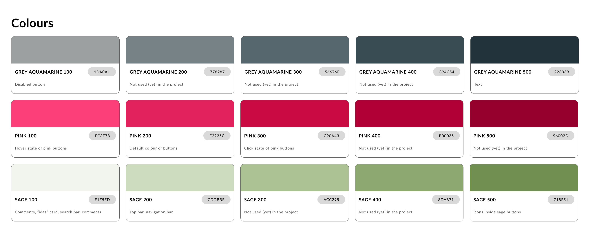

HackYeah 2022
Task: Less Waste
ReuseMe
Social Media Web App for Community of Creative Upcyclers

Task Description
Less Waste
In the natural world, there is no such thing as “waste” - everything is recycled down to every atom.
But here comes the human. Rapid growth in the 19th century started creating today's modern,
demanding consumers, Us.
A statistical European produces about 500 kg of municipal waste, and - according to Eurostat data
from 2020 - this value varies depending on the country from about 280 kg (in Romania) to even 844 kg
per inhabitant (in Denmark).
Recycling itself will not do the job. It is a last call to radically slash the waste output and take
into the action 5 zero waste rules:
- refuse what you don't need
- reduce what you do use
- reuse (or repair) whatever you can
- recycle what you can't refuse or reduce
- rot what's left over.
How to make everyone adopt the habits everyday and also keep them during a crisis like a pandemic?
It's time for you, the brightest minds in Europe, to come up with the most complex solutions, during
HackYeah 2022 in Kraków!
Let's create a zero waste, meaningful future for all, before it's too late!
My contribution
- Desk Research
- UX Design
- Prototyping
Desk Research
During the research phase I familiarized myself with the activity of Facebook groups related to the topic of zero/less waste. I concluded that the community mainly seeks knowledge about reusing things, such as unrepairable items, containers, or trash. As a team we decided to give them a more structured plarform that would atract people interested in sustainibility.
Benefits of the App Over Current Solutions: Facebook Groups
Facebook groups are known to lack structure and to make searching difficult. With our product, we give users a better experience by familiarizing them with upcycling possibilities. The community aspect of the app is encouraging and supportive, similar to Facebook groups, but much better organized.
Product Features
The main features of our web app allow users browse for ideas how to reuse one or more item. Our app displays easy and quick tips for how to reuse items, as well as DIY tutorials featuring them as search results. Importantly, the proposed tips do not require any mofifications of the items. The algorithm that we implemented in our app filters the results in order to display ideas that do not require using tools that the user may not have. The intuition behind it follows the spirit of less waste, which is to limit consuption. This is why we aim to limit the incentives for making additional purchases. The app is designed to be community-driven. Hence, users can submit their responses on how to reuse a particular item, comment on the topic, or rate the responses of other users. Following such information, our algorithm provides optimized ideas for future search results
Style Guide
Colour Palette
Difficulties and Complications we Encountered and what we Learned Along the Way
We spent quite a while on the idealizing phase of the project. We would definetely benefit from using tools for evaluating and filtering ideas in a more agile way. In the future we would definetely need an additional front-end developer, as the workload was quite a lot for two front-end members.
Ideas for the Future
-
Q/A - what can I do with ... ?
-
All this ideas can be overwhelming - some roadmap to get started?
-
Hint of the day
-
Compete against your friends on how many things have you managed to save
-
Rewards for contributions in form of points and rankings